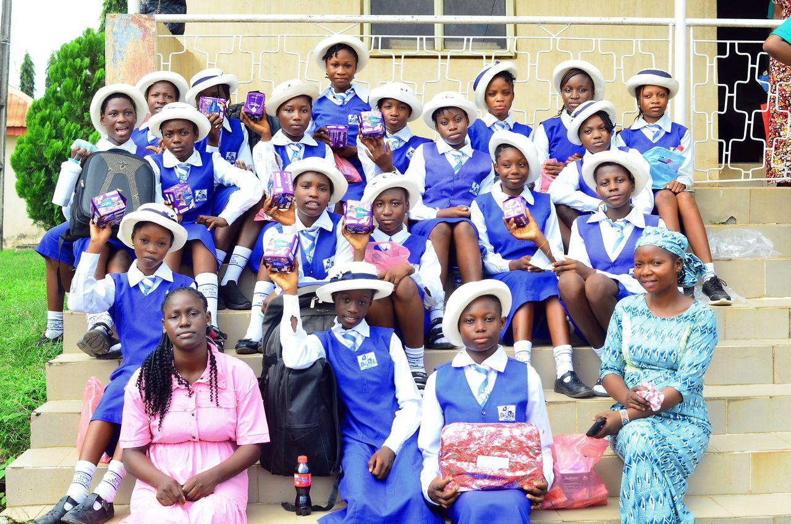
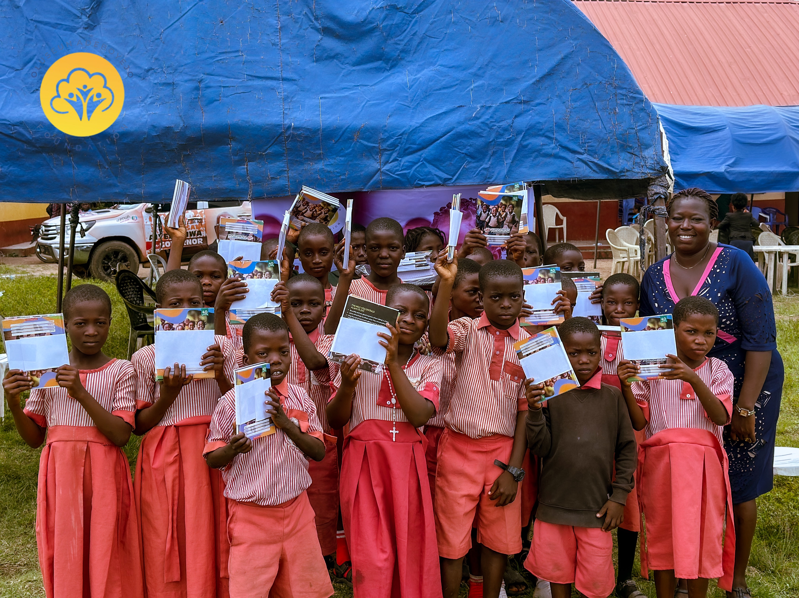
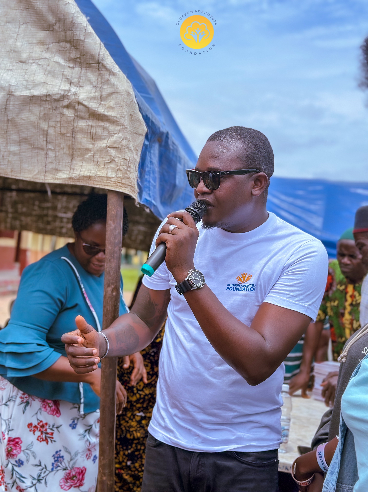
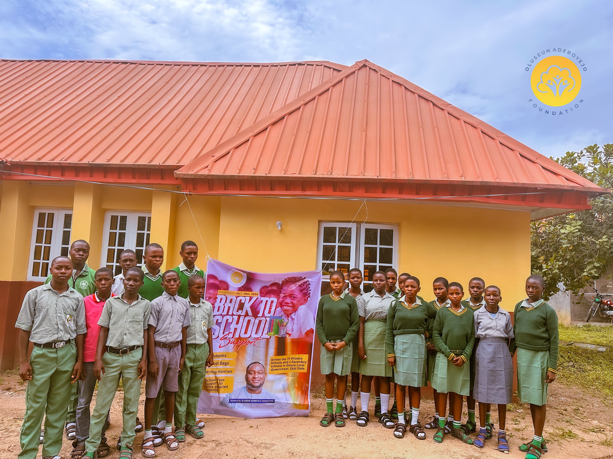
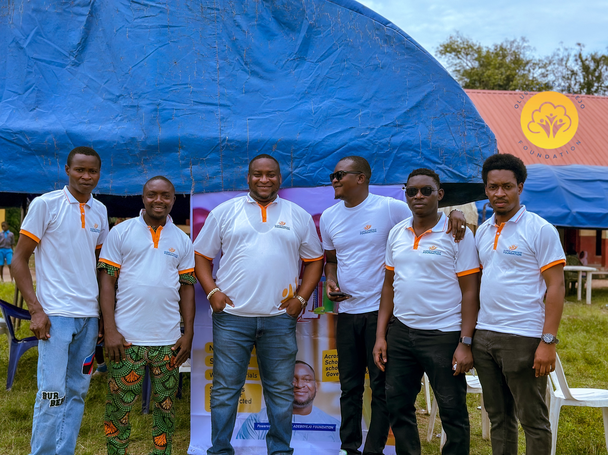
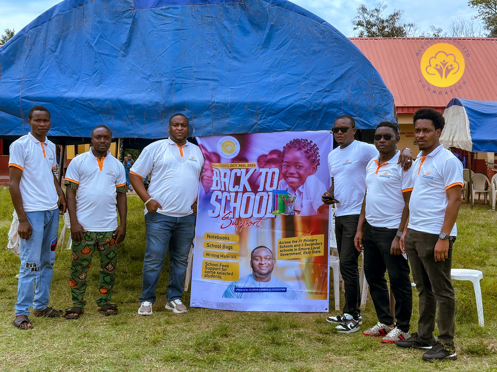

Education access
Learning materials, scholarship pathways and practical support that help students stay ready for school.
Scholarship guide ↗
Education · dignity · opportunity
We bring practical support closer to students, families and communities—helping more people learn, grow and move forward with confidence.
A school bag can remove a barrier. A scholarship can change a direction. The right support, delivered with care, can open a future.
The Oluseun Adeboyejo Foundation works alongside communities to widen access to education, wellbeing and sustainable opportunity. Our approach begins by listening, then turning local needs into practical action.
We focus on what people can use now—and what helps them build for tomorrow.
Back-to-school support

Learning is harder when the basics are out of reach. Our back-to-school initiative supports students with notebooks, school bags, writing materials and targeted fee assistance.
Figures shown on the foundation’s 2024 Back to School Support campaign materials.
Learning materials, scholarship pathways and practical support that help students stay ready for school.
Scholarship guide ↗Outreach shaped around the real needs of families and the places where they live.
See the community ↘Opportunities that strengthen practical capability, confidence and economic participation.
Partner with us ↗Focused support for people whose ideas and potential can multiply impact across a community.
Get involved ↗



Move the work forward
Partner on an outreach, support a student, contribute resources or simply start a conversation about what your community needs.
Contact the foundation Looking for scholarship information? →